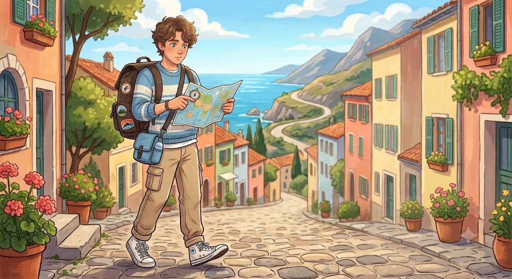

자유로운 발걸음으로 끊임없이 성장하는 탐험가

긍정적인 성격과 멈추지 않는 호기심을 지닌 세상의 여행자이자, 실무의 비효율을 개선하고 새로운 가치를 만들어 나가는 혁신가입니다.
주변 사람들에게 편안함을 주면서도, 맡은 바 업무에서는 확실한 책임감과 뛰어난 조율 역량을 보여줍니다.
ISFP (호기심 많은 예술가). 긍정적이고 조화로운 성향을 가집니다.
전체 세부내용 보기 →목적지 없는 여행. 낯선 환경을 탐구하고 시각을 넓히는 자유를 사랑합니다.
전체 세부내용 보기 →틀에 박힌 계획과 비효율. 시스템을 유연하고 최적화된 상태로 바꾸길 좋아합니다.
전체 세부내용 보기 →대규모 파트너사 조율, 공간 관리, 행정 프로세스 최적화 역량 보유.
전체 세부내용 보기 →기본적으로 ISFP 성향을 지니고 있어 주변 사람들을 배려하고 조직 내 부드러운 화합을 이끌어 냅니다. 하지만 업무에 임할 때는 누구보다 철저하고 정교합니다. 인증 실무 부서에서 근무할 당시 약 400개의 고객사와 50명의 심사원을 완벽하게 조율해 낸 세심함이 이를 증명합니다. 온화함 속에 숨겨진 단단한 책임감이 저의 강력한 무기입니다.
계획에 얽매이지 않고 발길 닿는 대로 떠나는 '자유로운 여행'을 좋아합니다. 정형화되지 않은 낯선 환경에 부딪히며 시야를 넓히고 새로운 아이디어를 얻는 과정에서 깊은 즐거움을 느낍니다. 이러한 열린 태도와 강한 호기심은 새로운 기술이나 낯선 직무 환경을 맞이할 때도 두려움 없이 빠르게 적응할 수 있는 강력한 원동력이 됩니다.
시간 단위로 꽉 막힌 경직된 계획이나 불필요한 절차로 생기는 '업무적 비효율성'을 멀리하고자 노력합니다. 저는 단순히 비효율을 불평하는 데 그치지 않고 능동적인 대안을 제시합니다. 실제로 이전 업무 과정에서 효율적인 고객 응대 매뉴얼을 직접 개발하여, 기존 응대 시간을 50% 이상 파격적으로 단축시킨 혁신적인 성과를 이끌어내기도 했습니다.
다양한 영역에서 탄탄한 실무 스펙트럼을 다져왔습니다. 대규모 고객사 및 외부 전문가 그룹 간의 정교한 일정·이해관계 조율 업무는 물론이고, 공유오피스 공간 관리 및 프로젝트 참여자 모집 업무, 그리고 공공기관 행정 인턴십을 통한 체계적인 오피스 행정 업무까지 공백 없이 완벽히 소화해 냈습니다. 이러한 올라운더 행정·운영 경험은 어떤 조직에서든 현장 중심의 실질적인 운영 효율화를 이끄는 든든한 밑바탕이 됩니다.
"AI · AX(인공지능 전환) 교육을 통한 성공적인 직무 전환"
단순히 주어진 실무를 안정적으로 운영하는 것을 넘어, 시대의 흐름인 인공지능 기술을 적극적으로 체득하여 산업의 디지털 전환을 이끄는 핵심 인재로 거듭나는 것이 현재 가장 큰 목표입니다.